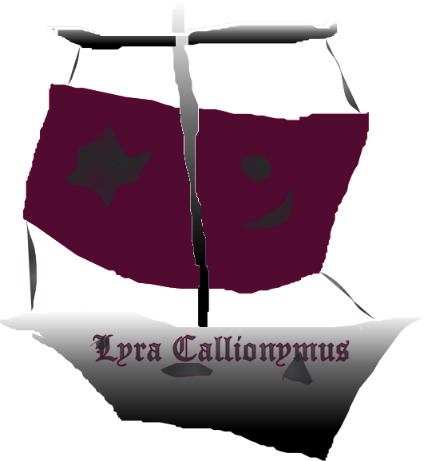

|

|
Das schwarze Brett
|
|
| Übersicht,
Vorschläge |
|
_Sonstiges - Schiff Verkauf (26  ) )
|
| Bres Lugh Elatha (RIP) |
So ist es momentan:
Schiffe können für 50% ihres Kaufpreises im Hafen wieder verkauft werden.
So soll es werden:
Anlehnend an meinen Vorschlag "Schiff Verfall" möchte ich nun anregen, auch einen Schiffgebrauchtmarkt zu eröffnen.
Verkauft werden kann auch nur über die Häfen.
Der Ankaufwert liegt nie höher als 50% des Kaufpreises.
Der Verkaufspreis liegt bei max. 80% des übliches Kaufpreises.
Kauft der Hafen ein Schiff an das gebraucht / beschädigt ist, so wird dieses zum Wiederverkauf wieder auf 100% gebracht, aber 1x Reparaturmöglichkeit abgezogen.
So kann man vielleicht ein Schiff für nur ~80% des eigentlichen Preises kaufen, möglicherweise aber nur noch einmal wieder reparieren wenn der Verfall voran geschritten ist.
Vorteile für das Spiel:
Neue Möglichkeiten
Nachteile für das Spiel:
?
Mögliche Problematiken:
Programmieraufwand, wie immer.
Sonstiges:
Benötigte Grafiken erstelle ich bei Wunsch gern. |
16.05.12 11:27
|
|
| Marea (RIP) |
find die Idee gut, aber 80% find ich zu hoch
wenn der Preis niedriger wäre würden sicher mehr Neulinge an den Erwerb eines Schiffes denken
|
16.05.12 12:30
|
|
Lyra Callionymus
 |
Ich finde die Idee teilweise gut und teilweise schlecht.
Schlecht finde ich das mit dem reparieren, wie ich im anderen Vorschlag schon beschrieben habe.
Das ein Schiff an Andere verkauft werden kann, finde ich gut. Jedoch müßte der Kaufpreis meiner Meinung nach frei einstellbar sein.
So könnten beispielsweise die Schaluppen oder die Barken von Seeleuten in der Ausbildung preiswert weiterverkauft werden, wenn sie dann auf eine Galeone oder eine Fregatte umsteigen.
Andererseits könnten preisgekrönte Schiffe mit Namensrolle, welche schon Segelregatten gewonnen haben oder auch berühmte Expeditionsschiffe, mit denen Schlachten gewonnen wurden, sehr teuer an Sammler versteigert werden. |
20.05.12 16:50
 |
|
Übersicht,
Vorschläge
|
|
|
|